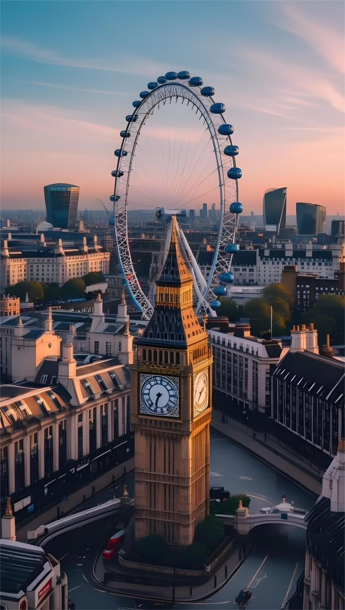
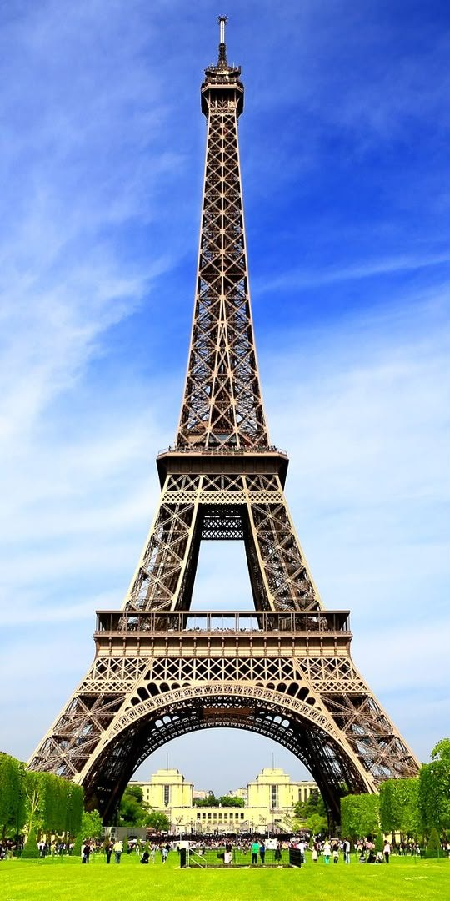

Procedures, timelines, budgets and documents for 12 study destinations from Senegal. Requirements change each year; confirm current rules with each institution and the relevant authorities.
Admission or scholarship, depending on the institution
Confirm with the institution and current official rules
Check current calls with each institution
Study in France
From Senegal, the Campus France Études en France procedure is required for study visa applications lasting more than six months. The information below covers the 2027 intake.
Campus France fee85,000 FCFAnon-refundable
Visa proof of funds€877.50/monthabout 575,600 FCFA since 1 August 2026
Application deadline15 December 2026connected programmes
Payment deadline19 December 2026after the payment request
Who can apply
2026 or 2027 high-school graduates, with no more than one repeated year.
Arabic-track baccalaureate (L-AR): a B2 French test is also required.
Students who have completed or will complete an accredited BTS, DUT, DiSEP, Licence or Master in 2027.
CTI engineering programme: after CPGE, BTS, DUT, DiSEP or a bachelor's degree.
Foreign nationals living in Senegal: valid residence permit (except ECOWAS nationals) and at least one year of study or work in Senegal.
Application steps
Build your study plan and check your eligibility.
Create one Études en France account and select programmes.
Submit the application by 15 December 2026.
Pay 85,000 FCFA at a Sunu Bank branch (formerly BICIS), only after receiving a payment request.
Attend the academic interview if invited; book it within seven days.
Confirm your final choice after receiving school responses.
Apply for the student visa after the end-of-procedure email (15 May–27 August 2027).
Programmes not connected to Études en France: BTS, BTSA, DCG, CPGE, IFSI through Parcoursup and some private schools. Apply through Parcoursup or directly to the school, then submit an Études en France file with the admission letter between 1 April and 15 July 2027. Additional documents and original-document checks run until 30 July 2027.
Documents to prepare
Valid passport.
Transcripts and diplomas (secondary school and higher education).
CV and cover letter for each programme.
B2 French test if you hold an L-AR baccalaureate.
For the visa: proof of funds (AVI through our partner Univers France Succès or a sponsor) and proof of accommodation (our partner Nexroom).
Campus France offices in Senegal
Dakar: Km 1, avenue Cheikh Anta Diop, opposite the 4th arrondissement police station.
Saint-Louis: Institut français, avenue Jean Mermoz.
Kaolack: Alliance franco-sénégalaise, 191 rue de France.
Ziguinchor: Alliance française, avenue Djignabo.
Budget to plan for: contact the team for a personalised quote for Einstein Services support and details about AVI options; Campus France fee: 85,000 FCFA; student visa: €50 (about 32,800 FCFA) plus about 15,000 FCFA in VFS Global fees; visa validation after arrival: €50. Request a personalised quote.
Important: a non-genuine document results in five years of ineligibility. A payment request does not mean your application is eligible; check the criteria before paying.
A study permit is required for programmes lasting more than six months. The number of permits is capped each year.
Proof of fundsCAD 22,895plus first-year tuition
Permit feeCAD 150plus CAD 85 biometrics fee
Provincial attestationPAL or CAQCAQ for Quebec
Master's or doctoral degreeNo PALpublic institution, since January 2026
Application steps
Choose a designated learning institution (DLI) and obtain its acceptance letter.
Get the provincial attestation: a PAL from the institution, or a CAQ for Quebec.
Gather proof of funds.
Apply online for a study permit and provide biometrics.
Complete a medical exam if requested by IRCC.
Documents to prepare
Valid passport (the name must match the acceptance letter).
Acceptance letter with the DLI number.
PAL or CAQ.
Proof of funds: bank statements, GIC, scholarship or sponsor letter with supporting documents.
Letter of explanation and study plan.
Quebec: in 2026, a single student must show CAD 24,617 for living expenses, almost 60% more than in 2025; the CAQ fee is CAD 135.
Budget to plan for: contact the team for a personalised quote for Einstein Services support; application fees: CAD 50–350 depending on the institution; Quebec CAQ: CAD 135; study permit: CAD 150; biometrics: CAD 85. Request a personalised quote.
Important: insufficient or poorly explained proof of funds is a leading reason for refusal.
Choose a university or university college and note its application deadline.
Bachelor's: request secondary-school diploma equivalency from the Wallonia-Brussels Federation. For a Master's, the institution decides on admission.
Obtain proof of enrolment.
Prepare proof of funds or a sponsor undertaking (Annex 32).
Apply for a type D visa through the Belgian diplomatic post.
Documents to prepare
Type D visa form and valid passport.
Proof of enrolment from the institution.
Secondary-school diploma equivalency (for a Bachelor's).
Proof of funds or Annex 32 stating “sufficient solvency”.
Medical certificate.
Police clearance certificate from age 21.
Limited to 60 places for the September 2027 intake. Our services include diploma equivalency, guidance, pre-enrolment and admission, visa support and AVI.
Budget to plan for: admission fee: €200 per institution (public universities); diploma equivalency: €150 for a Bachelor's applicant (reduced rate for Senegal, otherwise €400), payable before 15 July; type D visa: €250 since 1 July 2026, plus the Immigration Office fee depending on the application. View fees.
Good to know: the minimum amount is indexed each year. It will probably be slightly higher for the 2027 intake; we will confirm it when published.
Pre-enrolment is completed through the Universitaly portal. The published rules cover the 2026–27 and 2027–28 academic years.
Required funds€10,179.85about 6.68 million FCFA
Calculation€783.06 × 13per month, for 13 months
Pre-enrolmentUniversitalyvalidated by the university
2027–28 visa deadline31 October 2027final date to apply
Application steps
Choose a programme and check the university's dates.
Submit pre-enrolment through Universitaly and wait for validation.
Obtain a Declaration of Value or CIMEA certificate for your diplomas.
Gather proof of funds.
Apply by appointment for a type D “study, university enrolment” visa at the Italian Embassy.
Documents to prepare
Visa form, valid passport and identity photo.
Validated Universitaly pre-enrolment summary.
Declaration of Value or CIMEA certificate.
Proof of funds and financial capacity (bank statements, payslips, property documents).
Sponsorship letter if you do not have personal funds.
Scholarship certificate, if applicable, and health insurance.
Budget to plan for: contact the team for a personalised quote for the Einstein Services package and details about AVI options; Declaration of Value: 32,800 FCFA per document at the Italian Embassy in Dakar (plus 15,750 FCFA per legalisation and 8,550 FCFA per translation); type D study visa: €50 (about 32,800 FCFA) plus service fees. Request a personalised quote.
Important: tontine or microfinance funds are not accepted. A conditional pre-enrolment does not allow you to apply for a visa, and validated pre-enrolment does not guarantee a visa.
Students contact the university or school directly; the embassy is not involved in pre-enrolment. The canton sets the required proof of funds.
FribourgCHF 21,900per year
BaselCHF 2,000per month
Processing time2–4 monthsapply at least 3 months ahead
VisaType Dapply in person
Application steps
Obtain admission and proof of enrolment from the school.
Pay the requested study fees.
Prepare proof of funds.
Apply in person for a type D visa at the Swiss Embassy.
Wait for the canton's decision and then for the visa to be issued.
Documents to prepare
Type D visa form and valid passport.
Proof of enrolment from the institution.
Proof of funds: a bank account in your name or a sponsorship certificate issued by a bank.
Personal letter undertaking to leave Switzerland when your studies end.
Foreign nationals living in Senegal: residence permit.
Budget to plan for: the type D study visa is generally free for students; plan for school enrolment fees and the proof of funds required by the canton. View fees.
Important: you cannot enter Switzerland on a tourist visa and apply for a study visa after arrival.
Morocco is a leading destination for Senegalese students. Options include AMCI scholarships, managed in Senegal by the Scholarships Directorate, or private schools.
AMCI scholarships 2026–27260offered to Senegal
2027–28 campaignfrom May 2027watch for announcements
Student residence card1 yearrenewable
Paid employmentnot permittedunder student status
AMCI scholarship steps
Watch for the call from the Ministry of Higher Education.
Check eligibility: Bachelor's for recent high-school graduates; Master's for Bachelor's degree holders.
Submit the application to the Scholarships Directorate in Dakar.
Check entry requirements with the Moroccan Embassy in Dakar.
Apply for a student residence card after arrival.
Documents to prepare
Valid passport.
Diplomas and transcripts.
Admission letter or scholarship certificate.
Identity photos.
Proof of enrolment, renewed each year for the residence card.
Without a scholarship: private schools admit students based on their application, for example Université Internationale de Rabat, EIGSI Casablanca or École Centrale Casablanca. Ask us about schools.
Important: the Moroccan Embassy in Dakar has warned about intermediaries offering to complete the electronic travel authorisation on your behalf. Apply online yourself.
Many public universities charge no general tuition. Admission depends on how your previous diploma is recognised, and a blocked account is required for the visa.
Some universities offer programmes in English or French. The study acceptance letter issued by the Ministry of Education is a key document for the visa.
Key documentAcceptance letterissued by the ministry
Tuition feesin eurospayable after acceptance
Romanian-language programme+ 1 yearpreparatory language year
Government scholarships31 March2026 deadline
Application steps
Choose a university and check its language of instruction.
Send your application to the university with certified translations.
Receive the study acceptance letter from the Ministry of Education.
Pay tuition by the stated deadline (20 days at Politehnica Bucharest).
Apply for a study visa at the Romanian Embassy.
Documents to prepare
Certified copies of diplomas, translated into Romanian, English or French.
Study acceptance letter.
Passport with study visa.
Proof of tuition payment.
Identity photos.
Romanian government scholarships: programmes are taught in Romanian and exclude medicine, dentistry and pharmacy. They cover tuition, the preparatory year and a monthly allowance.
Admissions, timelines, supporting documents and visa procedures depend on the programme and institution. Confirm current requirements with the university and U.S. authorities before applying.
Prepare your application
Choose a programme and check the institution's admission criteria.
Confirm required documents, language tests and deadlines directly with the university.
After admission, follow the institution's instructions and the official student-visa process.
Documents to plan for
Valid passport and identity documents.
Diplomas and transcripts, with translations if required.
Admission documents and proof of funds as required by the programme and visa process.
Confirm before applying: admission criteria, institution-specific fees, funding, deadlines and visa rules. Einstein Services can guide you and prepare a personalised support proposal.
Institution choice, admission requirements and the Student visa process vary by programme. Always confirm current requirements and deadlines with the institution and UK authorities.


Prepare your application
Compare programmes and check each institution's admission requirements.
Ask the institution for its required documents, language tests and deadlines.
After admission, check the required documents and Student visa steps on the official website.
Documents to plan for
Valid passport and identity documents.
Diplomas, transcripts and proof of English level, depending on the programme.
Admission letter and documents requested by the institution and authorities.
Confirm before applying: admission criteria, institution-specific fees, funding, deadlines and visa rules. Einstein Services can guide you and prepare a personalised support proposal.
Programmes, scholarships and admission requirements vary by institution. Check current calls and official rules before preparing an application.
Prepare your application
Identify programmes open to international applicants.
Confirm criteria, required documents and deadlines directly with the institution.
Check visa and arrival requirements with the relevant authorities.
Documents to plan for
Valid passport and identity documents.
Diplomas and transcripts, with translations or certification as required.
Admission or scholarship documents and the items requested for the visa.
Confirm before applying: available programmes, scholarship criteria, funding, deadlines and visa rules. Einstein Services can guide you and prepare a personalised support proposal.
These guides provide general information. Only institutions and the relevant authorities decide on admission and visas. Einstein Services does not guarantee admission or a visa.
 United Kingdom
United Kingdom